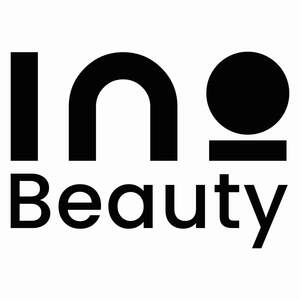

Trade Mark Journal No.2025/050 12 December 2025
UK00004305023 3 December 2025 (3,35)

- Class 3
- Cosmetic creams; Creams (Cosmetic -); Cosmetics and cosmetic preparations; Sunscreens [for cosmetic use]; Facial lotions [cosmetic]; Tonics[cosmetic]; Facial creams [for cosmetic use]; Facial creams [cosmetic]; Cosmetic oils; Facial cleansers [cosmetic]; Anti-ageing creams [for cosmetic use]; Facial moisturisers [cosmetic]; Cosmetic moisturisers; Cosmetic soaps; Sunscreen [for cosmetic use]; Cosmetic facial lotions; Cosmetic soap; Lotions for cosmetic purposes; Cosmetic masks; Dyes (Cosmetic -); Cosmetic dyes; Cosmetic powder; Cosmetic preparations; Anti-aging creams [for cosmetic use]; Cosmetic pencils; Pencils (Cosmetic -); Cosmetic kits; Kits (Cosmetic -); Anti-wrinkle creams [for cosmetic use]; Cosmetic skin fresheners; Lacquer for cosmetic purposes; Skin creams[for cosmetic use]; Cosmetic creams for the skin; Skin creams [cosmetic]; Pro-collagen for cosmetic purposes; Facial cream [for cosmetic use]; Henna for cosmetic purposes; Serums for cosmetic purposes; Skin cleansers [cosmetic]; Skin balms[cosmetic]; Cosmetic skin enhancers; Cosmetic tanning preparations; Collagen for cosmetic purposes; Cleansing creams [cosmetic]; Cosmetic hair lotions; Facial scrubs[cosmetic]; Cosmetic rouges; Self-tanning preparations [cosmetic]; Facial toners[cosmetic]; Lip coatings [cosmetic]; Skin cream [for cosmetic use]; Pomades for cosmetic purposes; Skin whitening preparations [cosmetic]; Anti-wrinkle cream [for cosmetic use]; Suncare lotions [for cosmetic use]; Anti-ageing serums for cosmetic purposes; After-sun lotions [for cosmetic use]; Toning creams [cosmetic]; Cosmetic creams and lotions; Cosmetic sun-protecting preparations; Astringents for cosmetic purposes; Glitter for cosmetic purposes; Cosmetic facial masks; Facial masks[cosmetic]; Sunscreen creams [for cosmetic use]; Cosmetic sunscreen preparations; Toners for cosmetic purposes; Facial packs [cosmetic]; Cosmetic facial packs; Facial washes [cosmetic]; Lip stains for cosmetic purposes; Skin care lotions[cosmetic]; Cosmetic nail preparations; Cosmetic massage creams; Geraniol for cosmetic purposes; Cosmetic suntan lotions; Cosmetic suntan preparations; Cosmetic hand creams; Retinol cream for cosmetic purposes; Oils for cosmetic purposes; Cosmetic preparations for eyelashes; Eyelashes (Cosmetic preparations for-); Skin toners [cosmetic]; Skin care creams [cosmetic]; Cosmetic creams for skincare; Skin hydrators for cosmetic purposes ; Cosmetic products for the shower; Procollagen for cosmetic purposes; Pencils for cosmetic purposes; Cosmetic eye gels; Hair care creams [for cosmetic use]; Hair care lotions [for cosmetic use]; Gels for cosmetic purposes; Cosmetic sun-tanning preparations; Exfoliating scrubs for cosmetic purposes; Hair tonics [for cosmetic use]; Self tanning creams[cosmetic]; Cosmetic preparations for slimming purposes; Slimming purposes(Cosmetic preparations for -); Cosmetic nourishing creams; Skin care (Cosmetic preparations for -); Cosmetic preparations for skin care; Skin conditioning creams for cosmetic purposes; Ointments for cosmetic use; Self tanning lotions[cosmetic]; Suntan oils for cosmetic purposes; Softening cleanser[cosmetic]; Moisturising concentrates [cosmetic]; Cosmetic face powders; Face powders [for cosmetic use]; Cosmetic eye pencils; Lint for cosmetic purposes; Moisturising gels [cosmetic]; Moisturising skin lotions[cosmetic]; Cosmetics; Sun creams [for cosmetic use].
- Class 35
- The bringing together, for the benefit of others, enabling customers to conveniently view and purchase those goods, including via retail stores, wholesale outlets, electronic media or through mail order catalogues, of cosmetic creams, creams (cosmetic -), cosmetics and cosmetic preparations, sunscreens [for cosmetic use], facial lotions [cosmetic], tonics[cosmetic], facial creams [for cosmetic use], facial creams [cosmetic], cosmetic oils, facial cleansers [cosmetic], anti-ageing creams [for cosmetic use], facial moisturisers [cosmetic], cosmetic moisturisers, cosmetic soaps, sunscreen [for cosmetic use], cosmetic facial lotions, cosmetic soap, lotions for cosmetic purposes, cosmetic masks, dyes (cosmetic -), cosmetic dyes, cosmetic powder, cosmetic preparations, anti-aging creams [for cosmetic use], cosmetic pencils, pencils (cosmetic -), cosmetic kits, kits (cosmetic -), anti-wrinkle creams [for cosmetic use], cosmetic skin fresheners, lacquer for cosmetic purposes, skin creams[for cosmetic use], cosmetic creams for the skin, skin creams [cosmetic], pro-collagen for cosmetic purposes, facial cream [for cosmetic use], henna for cosmetic purposes, serums for cosmetic purposes, skin cleansers [cosmetic], skin balms[cosmetic], cosmetic skin enhancers, cosmetic tanning preparations, collagen for cosmetic purposes, cleansing creams [cosmetic], cosmetic hair lotions, facial scrubs[cosmetic], cosmetic rouges, self-tanning preparations [cosmetic], facial toners[cosmetic], lip coatings [cosmetic], skin cream [for cosmetic use], pomades for cosmetic purposes, skin whitening preparations [cosmetic], anti-wrinkle cream [for cosmetic use], suncare lotions [for cosmetic use], anti-ageing serums for cosmetic purposes, after-sun lotions [for cosmetic use], toning creams [cosmetic], cosmetic creams and lotions, cosmetic sun-protecting preparations, astringents for cosmetic purposes, glitter for cosmetic purposes, cosmetic facial masks, facial masks[cosmetic], sunscreen creams [for cosmetic use], cosmetic sunscreen preparations, toners for cosmetic purposes, facial packs [cosmetic], cosmetic facial packs, facial washes [cosmetic], lip stains for cosmetic purposes, skin care lotions[cosmetic], cosmetic nail preparations, cosmetic massage creams, geraniol for cosmetic purposes, cosmetic suntan lotions, cosmetic suntan preparations, cosmetic hand creams, retinol cream for cosmetic purposes, oils for cosmetic purposes, cosmetic preparations for eyelashes, eyelashes (cosmetic preparations for-), skin toners [cosmetic], skin care creams [cosmetic], cosmetic creams for skincare, skin hydrators for cosmetic purposes , cosmetic products for the shower, procollagen for cosmetic purposes, pencils for cosmetic purposes, cosmetic eye gels, hair care creams [for cosmetic use], hair care lotions [for cosmetic use], gels for cosmetic purposes, cosmetic sun-tanning preparations, exfoliating scrubs for cosmetic purposes, hair tonics [for cosmetic use], self tanning creams[cosmetic], cosmetic preparations for slimming purposes, slimming purposes(cosmetic preparations for -), cosmetic nourishing creams, skin care (cosmetic preparations for -), cosmetic preparations for skin care, skin conditioning creams for cosmetic purposes, ointments for cosmetic use, self tanning lotions[cosmetic], suntan oils for cosmetic purposes, softening cleanser[cosmetic], moisturising concentrates [cosmetic], cosmetic face powders, face powders [for cosmetic use], cosmetic eye pencils, lint for cosmetic purposes, moisturising gels [cosmetic], moisturising skin lotions[cosmetic], cosmetics, sun creams [for cosmetic use]; retail services in connection with cosmetic creams, creams (cosmetic -), cosmetics and cosmetic preparations, sunscreens [for cosmetic use], facial lotions [cosmetic], tonics[cosmetic], facial creams [for cosmetic use], facial creams [cosmetic], cosmetic oils, facial cleansers [cosmetic], anti-ageing creams [for cosmetic use], facial moisturisers [cosmetic], cosmetic moisturisers, cosmetic soaps, sunscreen [for cosmetic use], cosmetic facial lotions, cosmetic soap, lotions for cosmetic purposes, cosmetic masks, dyes (cosmetic -), cosmetic dyes, cosmetic powder, cosmetic preparations, anti-aging creams [for cosmetic use], cosmetic pencils, pencils (cosmetic -), cosmetic kits, kits (cosmetic -), anti-wrinkle creams [for cosmetic use], cosmetic skin fresheners, lacquer for cosmetic purposes, skin creams[for cosmetic use], cosmetic creams for the skin, skin creams [cosmetic], pro-collagen for cosmetic purposes, facial cream [for cosmetic use], henna for cosmetic purposes, serums for cosmetic purposes, skin cleansers [cosmetic], skin balms[cosmetic], cosmetic skin enhancers, cosmetic tanning preparations, collagen for cosmetic purposes, cleansing creams [cosmetic], cosmetic hair lotions, facial scrubs[cosmetic], cosmetic rouges, self-tanning preparations [cosmetic], facial toners[cosmetic], lip coatings [cosmetic], skin cream [for cosmetic use], pomades for cosmetic purposes, skin whitening preparations [cosmetic], anti-wrinkle cream [for cosmetic use], suncare lotions [for cosmetic use], anti-ageing serums for cosmetic purposes, after-sun lotions [for cosmetic use], toning creams [cosmetic], cosmetic creams and lotions, cosmetic sun-protecting preparations, astringents for cosmetic purposes, glitter for cosmetic purposes, cosmetic facial masks, facial masks[cosmetic], sunscreen creams [for cosmetic use], cosmetic sunscreen preparations, toners for cosmetic purposes, facial packs [cosmetic], cosmetic facial packs, facial washes [cosmetic], lip stains for cosmetic purposes, skin care lotions[cosmetic], cosmetic nail preparations, cosmetic massage creams, geraniol for cosmetic purposes, cosmetic suntan lotions, cosmetic suntan preparations, cosmetic hand creams, retinol cream for cosmetic purposes, oils for cosmetic purposes, cosmetic preparations for eyelashes, eyelashes (cosmetic preparations for-), skin toners [cosmetic], skin care creams [cosmetic], cosmetic creams for skincare, skin hydrators for cosmetic purposes , cosmetic products for the shower, procollagen for cosmetic purposes, pencils for cosmetic purposes, cosmetic eye gels, hair care creams [for cosmetic use], hair care lotions [for cosmetic use], gels for cosmetic purposes, cosmetic sun-tanning preparations, exfoliating scrubs for cosmetic purposes, hair tonics [for cosmetic use], self tanning creams[cosmetic], cosmetic preparations for slimming purposes, slimming purposes(cosmetic preparations for -), cosmetic nourishing creams, skin care (cosmetic preparations for -), cosmetic preparations for skin care, skin conditioning creams for cosmetic purposes, ointments for cosmetic use, self tanning lotions[cosmetic], suntan oils for cosmetic purposes, softening cleanser[cosmetic], moisturising concentrates [cosmetic], cosmetic face powders, face powders [for cosmetic use], cosmetic eye pencils, lint for cosmetic purposes, moisturising gels [cosmetic], moisturising skin lotions[cosmetic], cosmetics, sun creams [for cosmetic use].
INO KOZMETİK ANONIM SIRKETI
Representative: Downing IP Limited